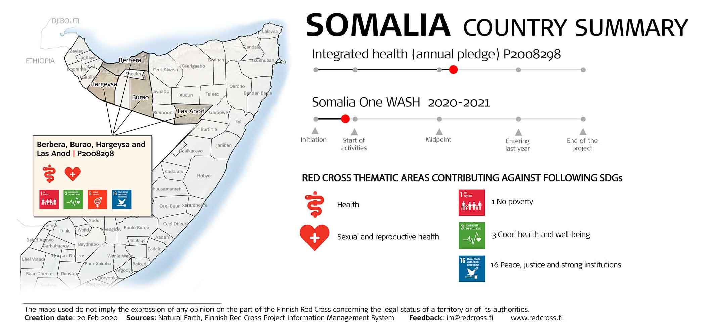
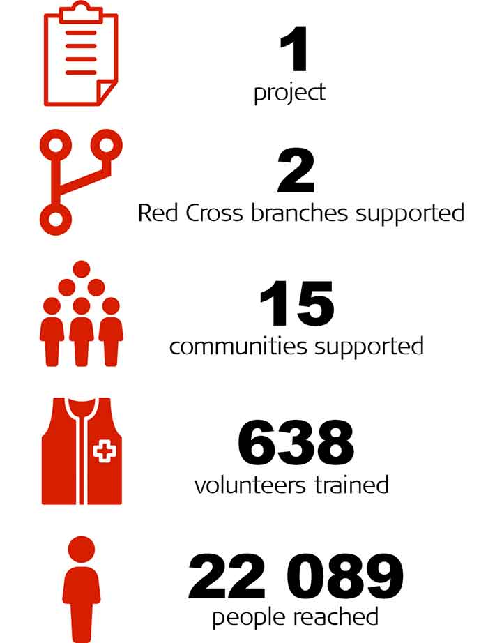
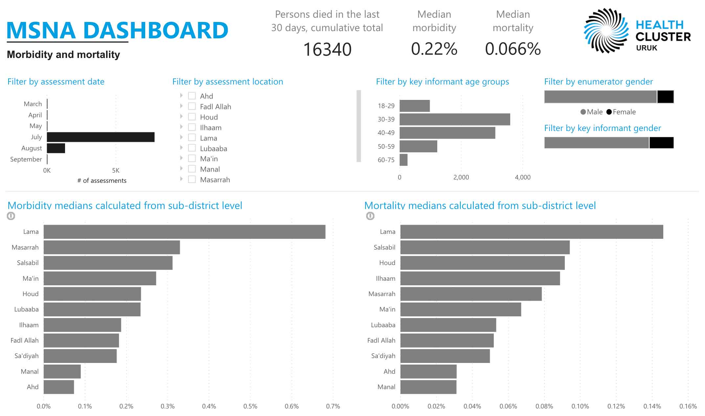
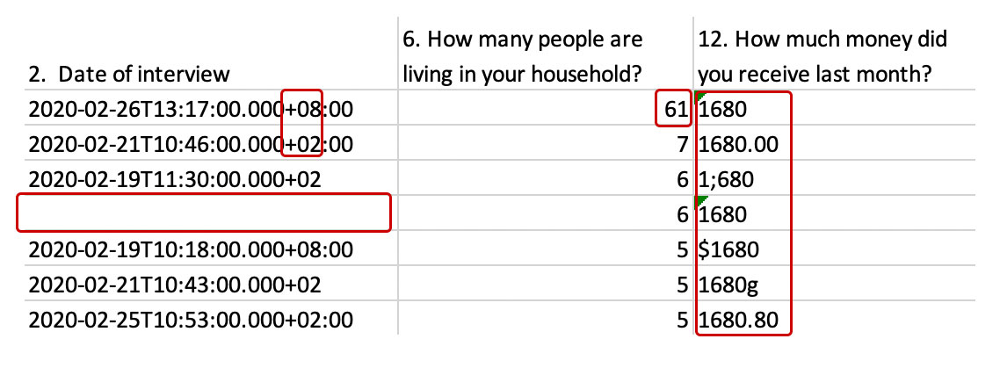
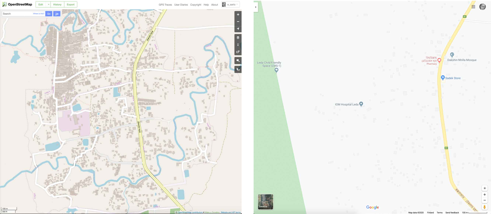
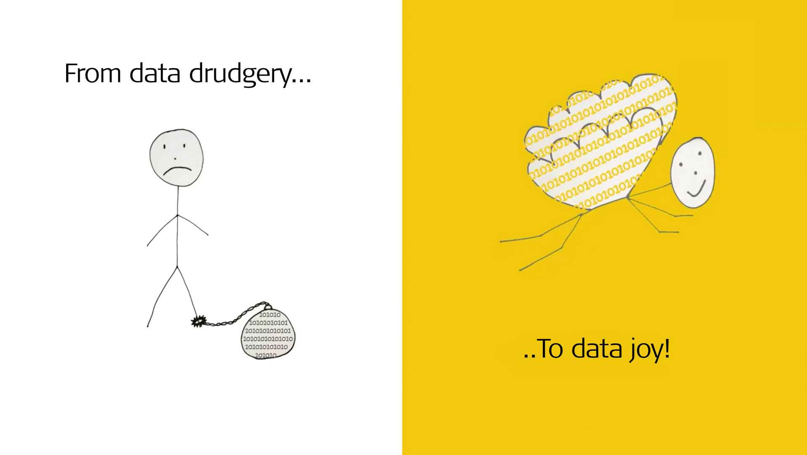

Finnish Red Cross staff at the HQ and field can request information management (IM) support from Eero Sario. This website provides a non-exhaustive list of various IM products available. For more information, please contact Eero at firstname.lastname@redcross.fi.
Use arrow keys on your keyboard to navigate.
Sample products by Eero Sario and SIMS.
Forked from SIMS cookbook by Kat Hicks
Click below to jump to a section or press the right arrow to start browsing examples one by one.
The following guide aims to help Finnish RC staff at HQ and in the field to be aware of the most common IM products, how they are helpful and the data needed for their timely production.
The products included are not intended to be exhaustive but rather aim to facilitate effective engagement and act as a stimulus for new ideas.
The guide covers 11 of the most common products with a page per product and details the purpose alongside the data and time requirements. It also attempts to rate the ease of production versus resulting impact to aid in the prioritisation of requests.
It is important to note that the ease versus impact scale is only a rough guide as both can vary considerably for the same product between different programmes or operations. Data can be readily available in one context, for example, and very hard to access in another.
It should also be mentioned that the production times listed are only relative indications. The amount of time required can depend on the size of the area in question, availability of the data and the workload at the time.
Last updated: August 2020
 
Infographics are good for e.g. enlivening reports or sharing key messages in social media. The amount of information should be kept as low as possible to maximize impact.
Above are two very different infographics. The one on the left was printed page-wide on an A4 report while the one on the right could be used in much smaller size.
Press the down arrow for more details on this and following pages.
Data
Infographic data
Sourced in the field
Data to be turned into an infographic. Could be an Excel file or just bullet points to be visualized.
Time
Initial production: one day
Updates: one to few hours
Ease

Impact

Interactive dashboards provide a great way to show multiple pieces of related information in one view and allow users to dig deeper into the information.
See an example of a health information dashboard. All graphs are linked together in this dashboard so try clicking e.g. any of the bars to see how the views change.
Data
Data for the dashboard
Sourced in the field
Often collected using mobile data collection tools such as KoBo and fed into the dashboard on a regular basis. Could be also a static dataset, e.g. an Excel spreadsheet.
Country boundaries
Sourced remotely
Usually widely available although sometimes governments will not release lower level data.
Time
Initial production: one to three days
Updates: a few hours
Ease
Impact

A real life example of messy data. This is an excerpt from a post distribution monitoring spreadsheet. A) Dates are in ISO 8601 format, which require some processing before one can e.g. filter by dates. Also note the +08 vs. +02 - there's a six-hour time zone difference between these two dates & times. B) One entry is missing the time and date completely. C) One household has suspiciously many people. D) The column with amount of money is a total mess. There were actually six different ways a figure of 1680 dollars was recorded! E) Also all the monetary figures were stored as text and not as numbers, which makes it impossible to do any calculations before the data is thoroughly cleaned.
Data is inherently messy. We have all seen it: dates in different formats, numbers stored as text, a whole postal address in one cell, values with both commas and dots as decimal separators, using different names and abbreviations for same things, currencies with and without currency codes, spreadsheet data that is not in Excel format but instead in a Word or PDF file...The list just goes on and on!
Inevitably data has to be always cleaned and organised before one can do any analysis of it. You can always correct small amount of data manually by going through the spreadsheet cell by cell but if you have large amounts of messy data there are multiple techniques and tools to clean up the data efficiently.
Data
Data to be cleaned up
Typical examples are Excel files that require some (or a lot of!) work to analyse but can be really in any format. Just state what you want to be done for it and what information are you hoping to get out of it.
Time
Clean-up
Depends fully on the data; could be anything from a few minutes to few days.
Analysis and conclusions (optional)
You can also request analysis of cleaned data. Depends fully on the analysis request; could be anything from a few minutes to few days.
Ease
Impact

Basemaps are very useful for general orientation, planning and logistics. They can add value in many different situations and printed versions can be drawn on and used for mocking out additional maps.
Basemaps are useful in all operations and programmes in any technical area.
Data
Local geographical data
Sourced remotely
Often openly available although data from the field is sometimes more extensive and accurate.
Country boundaries
Sourced remotely
Usually widely available although sometimes governments will not release lower level administrative data.
Time
Initial production: one day
Ease
Impact

Case maps are valuable for highlighting areas most in need during epidemic responses. If data is available, multiple maps can also be created to breakdown the geography by confirmed and suspected caseload.
Case maps are only useful in epidemic disaster responses but can add value at any scale.
Data
Case data
Sourced remotely
Often provided by the Ministry of Health or WHO but spatial scale varies. Data from the field can help to supplement.
Country boundaries
Sourced remotely
Usually widely available although sometimes governments will not release lower level administrative data.
Time
Initial production: one day
Updates: a few hours
Ease
Impact

Distribution maps are most useful for monitoring and reporting. They allow operations staff to keep track of distributions and communicate the quantity of goods distributed in different locations.
They are most useful in responses with significant distributions and the related reporting needs.
Data
Distributions data
Sourced in the field
Focal point for maintaining such data varies between responses.
Country boundaries
Sourced remotely
Usually widely available although sometimes governments will not release lower level administrative data.
Time
Initial production: one day
Updates: a few hours
Ease
Impact

Population affected maps are useful for identifying areas that are most in need. It can help inform decision making on locating teams, planning distributions and directing resources more generally.
They are most useful in medium to large responses with varying needs over a large geographical area.
Data
Needs assessment
Sourced in the field
Needs assessment data from the assessment actors. Combining with population statistics can also be useful.
Country boundaries
Sourced remotely
Usually widely available although sometimes governments will not release lower level administrative data.
Time
Initial production: two days
Ease
Impact

Gap analysis is a numerical comparison of overall need against existing response activities. It is extremely useful for highlighting remaining gaps and helping decisions around directing remaining resources.
Gap analysis is most useful at a granular level but can be helpful in all types of response.
Data
Needs assessment
Sourced in the field
3W or distribution data
Sourced in the field
Depending on the nature of the response, either 3W or distribution data will provide the information for existing response activities.
Time
Analysis: two days
Visualisation: one day
Ease
Impact

Secondary data collection gives value by filling in critical data gaps. It is most appropriate for collecting data on existing points of interest such as health centres, refugee camps or security incidents.
It can be useful in any type of operation or programme.
Question
Only requirement for secondary data collection is a viable question you wish to have answered.
Sourced in the field
Time
Initial research: three days
Updates: a few hours (frequency varies)
Ease
Impact

Cox's Bazaar on OpenStreetMap (left) and Google Maps (right).
Although you might have gotten used to navigating anywhere with the help of Google Maps, it might surprise many people how often less developed areas are completely missing from it. As a first step navigate to OpenStreetMap (OSM), which is like a "Wikipedia of maps", i.e. it has been created 100% by volunteer efforts. You will likely find OpenStreetMap to have already sufficient coverage of your programme/operation area. IFRC, OCHA, MSF etc. use OSM on a daily basis. Install Maps.me or OsmAnd to your mobile device for (car) navigation.
In the unlikely case of the area missing also from OpenStreetMap, the situation can be remedied: since anyone can edit OpenStreetMap by e.g. adding missing buildings, roads and points of interest, you can request Eero to add them to the OpenStreetMap. This will be done with the help of satellite images, so if you want to have e.g. names of the roads on the map, they would have to provided by you or your local counterparts.
Data
Area to be mapped
Digital imagery
Available free of charge globally, no need to provide from the field.
Road names, points of interest (optional)
To be provided from the field. If you want to have e.g. hospitals and schools added to map, their GPS coordinates should be provided or alternatively pointed from the map.
Time
Mapping: one to ten days (depending on the size of the area to be mapped)
Ease
Impact

Do you or your counterparts need help in getting started with mobile field data collection, e.g. how to use KoBo? Would you like to learn how to be more effective with Excel? Heard many good things about Power BI but don't know where to start? I can provide online or on-site (COVID-19 pending) trainings on various IM topics one-on-one or to a bigger group.
Data
Optional
Depending on the training, we can work on your data or I can provide the sample data to work with.
Time
Planning: one to ten days
Depending on the scope and the content of the training.
Facilitation: From 1 to 3*8 hours
Depending on the scope and the content of the training.
Ease
Impact
Make sure to include following aspects in your request to minimize back and forth:
* Desired audience: e.g. external, internal, donor, government, NS managements
* Intended outcome: e.g. identifying beneficiary numbers, conveying messages X, Y and Z
* Format: e.g. A2 poster, half page of A4 report, web page, Instagram post
* The data you'd like me to work on
* Explanations of anything unique to the dataset, e.g. column headings that don’t make sense to outsiders
* Desired due date
Unstructured requests:
Sometimes a request is an idea you haven’t had time to think through or don’t have the data to support. That’s OK. Remote supporters can be creative on your behalf or locate data independently. But you may spend more time reviewing or get back products that don’t fit your needs.
Example of a good request:
“We need a large-format map showing all the branch warehouses for logistics planning purposes. Attached is a list of them with their GPS coordinates. Can you use symbols to differentiate the warehouse capacities? We would need this already tomorrow!”
For IM support requests or any questions, please contact Eero Sario at firstname.lastname@redcross.fi.